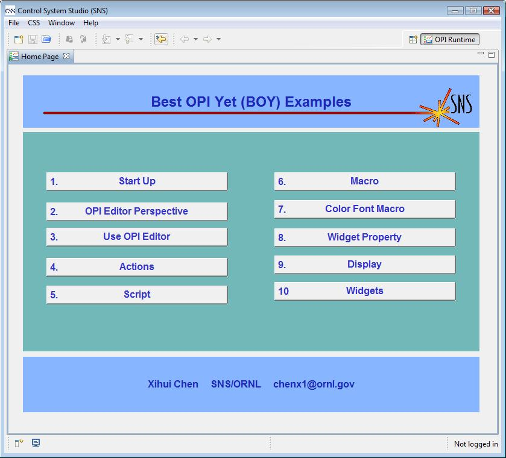

or press Ctrl+G to run the Main OPI. Just press the buttons on main OPI to see how BOY works. Now, you can start
your exciting journey with BOY!
or press Ctrl+G to run the Main OPI. Just press the buttons on main OPI to see how BOY works. Now, you can start
your exciting journey with BOY!
The OPI Editor Perspective has all the necessary workbench part prearranged so that you can easily start your OPI development. The OPI Editor Perspective can be opened from menu: CSS->Display->OPI Editor Perspective or Window->Open Perspective->OPI Editor .
The OPI Examples can be loaded to your workspace by selecting menu
CSS->Display->Install OPI Examples
. Now, you can see a project named
BOY Examples
in the navigator. Double click
Main.opi
to open it in the OPI Editor. Click the run button
or press Ctrl+G to run the Main OPI. Just press the buttons on main OPI to see how BOY works. Now, you can start
your exciting journey with BOY!
